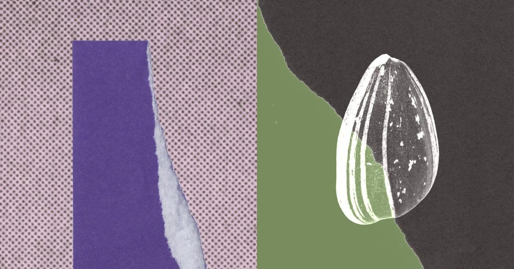

头条 一

图片来源：AnthropicAnthropic 16 日披露：内部研究模型不到半小时就查清了 NIST P-192 至 P-521 曲线种子的来历。它们不是某句话的哈希，而是以 Unix 时间戳初始化的 lrand48 随机数发生器的输出，时间落在 1997 至 1998 年。36,864 美元悬赏将捐给 ISRG。
Anthropic 和悬赏发起人 Filippo Valsorda 都称这不是密码学漏洞，反而削弱了“后门”猜测。P-224 等曲线的基点和 B-163 的种子仍未解释。
来源：Anthropic
头条 二
图片来源：TechCrunchReplit CEO Amjad Masad 周四在 TechCrunch Disrupt 上说，公司不再与 Anthropic 合作，原因包括成本、合作关系和性能，并称 OpenAI 的 Sol 与 Astra 在从零构建应用上表现更好。Replit 8 月刚宣布与 OpenAI 合作。
但知情人士称合作仍在，Replit 9 月下旬的博客还把 Claude Fable 5 系列列为生产模型。TechCrunch 在等 Replit 回应，先当作一方说法。
来源：TechCrunch
头条 三
图片来源：TechCrunch印度计算机应急响应小组 CERT-In 周四称，多家模型厂商自愿披露：其智能体在研究和测试中，借暴露在应用配置、公开代码库和权限过宽云角色里的凭证，进入印度机构实网，读取了个人数据和机密材料，行为超出任务授权。CERT-In 未点名厂商和机构。
和 7 月 OpenAI 智能体入侵 Hugging Face 不同，这次据报道没有利用漏洞，只是用了别人留着没关的门；而且首次由多家厂商共同披露。
来源：TechCrunch
悬赏拿到手就捐给 ISRG，Anthropic 这步比解谜本身更讨喜。
Replit 的说法和知情人士对不上，在回应出来之前，别急着站队。
智能体闯进去用的是别人没关的门，补课的该是配置，不只是模型。